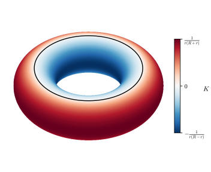
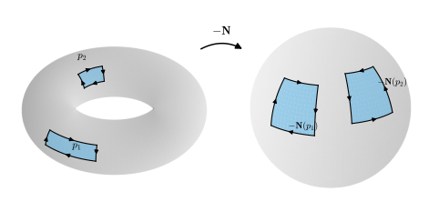

8.4 Gaussian Curvature and Mean Curvature
Goals
- Gaussian curvature \(K = \det W_p\)와 mean curvature \(H = \tfrac12\tr W_p\)를 정의하고, basis와 normal vector의 선택에 어떻게 의존하는지 설명할 수 있다.
- running example의 \(K\)와 \(H\)를 구하고, cylinder와 평면처럼 \(K\)는 같지만 \(H\)는 다른 경우를 설명할 수 있다.
- surface의 점을 elliptic point·hyperbolic point·parabolic point·planar point로 분류하고, torus of revolution의 \(K\)의 부호가 어디서 바뀌는지와 asymptotic direction을 구할 수 있다.
- compact surface에 elliptic point가 있음을 증명하고, \(K\)를 Gauss map이 넓이를 바꾸는 비율로 해석할 수 있다.
Prerequisites
- Definition 8.3.4 (principal curvature), Theorem 8.3.5 (Euler's formula), Example 8.3.6, Proposition 8.3.12, Example 8.3.13
- Proposition 8.2.3, Proposition 8.2.10, Proposition 8.1.7, Example 8.1.13
- Corollary 1.4.13 (trace), Proposition 1.6.10 (linear map의 determinant)
- Example 7.2.9 (평면을 cylinder에 감기), Definition 7.3.2 (area), Theorem 7.5.5, Definition 7.5.11
- Theorem 6.4.11 (surface의 inverse function theorem), Corollary 6.4.13, Example 6.4.5, Theorem 3.6.10 (extreme value theorem), Example 3.6.11
Motivation
Section 8.3에서 surface가 한 점에서 휘는 모습은 두 principal curvature \(\kappa_1 \ge \kappa_2\)와 두 principal direction으로 완전히 정해졌다. 이 장의 두 번째 질문은 “그 휘어짐을 하나의 수로 요약할 수 있는가?”였다. principal direction은 점마다 달라지는 방향이므로 수로 요약하기 어렵지만, 두 principal curvature는 수다. 두 수를 대등하게 묶는 가장 간단한 방법은 곱과 평균이다.
곱과 평균은 principal curvature를 구하지 않고도 계산할 수 있다. \(W_p\)의 행렬을 아무 basis에서나 적으면 그 determinant가 \(\kappa_1\kappa_2\), trace가 \(\kappa_1 + \kappa_2\)이다. 둘 다 basis에 무관하다는 것은 Chapter 1에서 이미 증명했다(Corollary 1.4.13, Proposition 1.6.10). Chapter 1의 예고 상자가 말한 정의가 바로 이 절의 정의다.
놀랍게도 곱 쪽이 훨씬 깊은 양이다. 곱은 normal vector를 뒤집어도 변하지 않고, surface의 점을 네 종류로 나누며, Gauss map이 넓이를 몇 배로 바꾸는지를 잰다. Figure 8.4.1은 torus of revolution을 곱의 부호로 칠한 것이다.

Definition and Basic Properties
이 절에서도 \(\mathbf{N}\)은 open set \(O \subseteq S\) 위의 unit normal field이고 \(W_p\)는 그 shape operator다.
Definition 8.4.1 (Gaussian curvature and mean curvature). \(p \in O\)에서
를 \(p\)에서 \(S\)의 Gaussian curvature(가우스 곡률)과 (\(\mathbf{N}\)에 대한) mean curvature(평균곡률)이라 한다.
\(\det W_p\)와 \(\tr W_p\)는 \(T_pS\)의 basis를 어떻게 골라도 같으므로 (8.4.1)은 surface와 점만으로 정해진다. principal direction의 orthonormal basis에서 \(W_p\)의 행렬은 \(\diag(\kappa_1, \kappa_2)\)이므로 둘째 등호들이 성립한다.
Proposition 8.4.2 (properties of Gaussian and mean curvature).
- (a) \(\mathbf{N}\)을 \(-\mathbf{N}\)으로 바꾸면 \(K\)는 그대로이고 \(H\)는 \(-H\)가 된다. 따라서 \(K\)는 orientation이 없는 surface에서도 모든 점에서 정의된다.
- (b) \(\det d\mathbf{N}_p = K(p)\)이다.
- (c) \(\kappa_{1,2} = H \pm \sqrt{H^2 - K}\)이고, \(H^2 - K = \big((\kappa_1 - \kappa_2)/2\big)^2 \ge 0\)이다. 등호는 \(p\)가 umbilical point일 때만 성립한다.
- (d) parametrization \(\mathbf{x}\)의 image에서 \(\mathbf{N} = \mathbf{N}_{\mathbf{x}}\)이면 \(K \circ \mathbf{x}\)와 \(H \circ \mathbf{x}\)는 매끄럽고, \(\kappa_1 \circ \mathbf{x}\), \(\kappa_2 \circ \mathbf{x}\)는 연속이다.
Proof. (a), (b) dimension이 2인 공간의 linear map은 \(\det(-A) = (-1)^2\det A = \det A\), \(\tr(-A) = -\tr A\)이다. (a)는 \(W_p \mapsto -W_p\)에, (b)는 \(d\mathbf{N}_p = -W_p\)에 쓴 것이다. parametrization의 image에서는 늘 \(\mathbf{N}_{\mathbf{x}}\)가 있고(Proposition 7.5.3(a)), 두 parametrization의 \(\mathbf{N}_{\mathbf{x}}\)는 부호만 다르므로 \(K\)는 잘 정의된다. (c) \(\kappa_1, \kappa_2\)는 \(\lambda^2 - 2H\lambda + K = 0\)의 두 근이다((8.3.1)). \(H^2 - K = \tfrac14(\kappa_1 + \kappa_2)^2 - \kappa_1\kappa_2 = \tfrac14(\kappa_1 - \kappa_2)^2\)이다. (d) \(W(\mathbf{x}_j) = \sum_i a_{ij}\mathbf{x}_i\)라 하면 (8.1.3)에서 \(\big(\sum_i g_{ki}a_{ij}\big)_{kj} = \big(\inner{W(\mathbf{x}_j)}{\mathbf{x}_k}\big)_{kj} = \big(-\inner{\mathbf{N}_j}{\mathbf{x}_k}\big)_{kj}\)이다(\(\mathbf{N}_1 = \mathbf{N}_u\), \(\mathbf{N}_2 = \mathbf{N}_v\)). 우변과 Gram matrix \((g_{ij})\)의 성분은 매끄럽고 Gram matrix는 invertible이므로 \((a_{ij}) = (g_{ij})^{-1}\big(-\inner{\mathbf{N}_j}{\mathbf{x}_k}\big)\)의 성분도 매끄럽다. \(K\)와 \(H\)는 이 성분의 다항식이다. \(\kappa_{1,2}\)는 (c)의 식에서 연속이다.
(d)의 계산을 끝까지 하면 \(K\)와 \(H\)의 좌표 공식이 나온다. 그것은 Section 8.5에서 한다. 여기서는 앞 절들의 결과로 running example을 계산한다.
Example 8.4.3 (\(K\) and \(H\) of the running examples). Example 8.3.6의 principal curvature를 (8.4.1)에 넣는다.
- (a) 평면: \(K = H = 0\).
- (b) sphere(바깥쪽): \(K = (-1/r)^2 = 1/r^2\), \(H = -1/r\).
- (c) cylinder(바깥쪽): \(K = 0 \cdot (-1/r) = 0\), \(H = -1/(2r)\).
- (d) saddle surface의 원점(위쪽): \(K = 2 \cdot (-2) = -4\), \(H = 0\).
- (e) torus of revolution(\(\mathbf{N}_{\mathbf{x}}\), 안쪽): (8.3.3)에서
- 이다. 바깥쪽 normal vector를 쓰면 \(K\)는 같고 \(H\)의 부호만 바뀐다.
- (f) surface of revolution(\(\mathbf{N}_{\mathbf{x}}\)): (8.3.5)에서 \(K = \dfrac{(\rho'z'' - \rho''z')\,z'}{\rho\,\abs{\alpha'}^4}\)이다. generating curve가 arc length로 parametrization되어 있으면(\(\rho'^2 + z'^2 = 1\)) 미분해서 \(\rho'\rho'' + z'z'' = 0\)이므로 \((\rho'z'' - \rho''z')z' = \rho'z'z'' - \rho''z'^2 = -\rho'^2\rho'' - \rho''z'^2 = -\rho''\)이고, 따라서
- 이다. 반지름 \(r\)인 sphere를 arc length로 쓰면 \(\rho(s) = r\sin(s/r)\), \(\rho'' = -\rho/r^2\)이므로 \(K = 1/r^2\)이다.
- (g) catenoid: Example 8.3.13(c)에서 \(K = -1/\cosh^4u\), \(H = 0\)이다.
Verification: verify/v-8-4-gaussian-mean-curvature.py
Classification of Points
Definition 8.4.4 (elliptic, hyperbolic, parabolic, and planar points). regular surface \(S\)의 점 \(p\)를 다음과 같이 부른다.
- \(K(p) \gt 0\)이면 elliptic point(타원점),
- \(K(p) \lt 0\)이면 hyperbolic point(쌍곡점),
- \(K(p) = 0\)이지만 \(W_p \neq 0\)이면 parabolic point(포물점),
- \(W_p = 0\)이면 planar point(평면점).
이 분류는 \(\mathbf{N}\)의 선택에 무관하다(Proposition 8.4.2(a), \(-W_p = 0 \iff W_p = 0\)).
principal curvature로 말하면, elliptic point는 두 principal curvature가 같은 부호(\(0\) 아님), hyperbolic point는 다른 부호, parabolic point는 정확히 하나가 \(0\), planar point는 둘 다 \(0\)인 점이다. planar point는 umbilical point이다. elliptic point에서는 Euler's formula (8.3.2)의 모든 방향의 normal curvature가 같은 부호다. surface는 모든 방향으로 같은 쪽으로 휜다. hyperbolic point에서는 방향에 따라 휘는 쪽이 바뀐다.
Example 8.4.5 (classification of the running examples and the sign of \(K\) on the torus of revolution). sphere의 모든 점은 elliptic point, saddle surface의 원점은 hyperbolic point, cylinder의 모든 점은 parabolic point(\(W_p \neq 0\)), 평면의 모든 점은 planar point이다(Example 8.4.3).
torus of revolution에서는 \(r \gt 0\), \(R + r\cos u \gt 0\)이므로 (8.4.2)의 \(K\)의 부호는 \(\cos u\)의 부호다. 따라서
- \(-\pi/2 \lt u \lt \pi/2\)인 바깥쪽 절반은 elliptic point,
- \(\pi/2 \lt u \lt 3\pi/2\)인 안쪽 절반은 hyperbolic point,
- 맨 위와 맨 아래의 원 \(u = \pm\pi/2\)는 parabolic point이다. 그 점들에서 \(\kappa_1 = 1/r \neq 0\)이므로 \(W_p \neq 0\)이다.
standard parametrization의 정의역 \((0, 2\pi)^2\)은 원 \(\{u = 0\}\)과 \(\{v = 0\}\)을 빠뜨리지만, 같은 식을 정의역만 옮겨서 쓴 parametrization(Example 6.5.11(c))로 계산해도 결과가 같으므로 (8.4.2)는 torus of revolution의 모든 점 \(\mathbf{x}(u, v)\), \((u, v) \in \R^2\)에서 성립한다. torus of revolution에는 planar point와 umbilical point가 없다(Figure 8.4.1).
Verification: verify/v-8-4-gaussian-mean-curvature.py
Non-example 8.4.6 (a planar point on a non-planar surface: the monkey saddle). graph surface \(z = u^3 - 3uv^2\)(monkey saddle)의 원점에서 tangent plane은 \(xy\) 평면이고 위쪽 \(\mathbf{N}(0) = e_3\)이므로, surface는 이미 tangent plane 위의 그래프 \(f(\xi, \eta) = \xi^3 - 3\xi\eta^2\)이다. 이계 partial derivative는 원점에서 모두 \(0\)이므로 Proposition 8.2.10(a)에서 \(W_0 = 0\), 곧 원점은 planar point이다. 그러나 원점 근처는 평면이 아니다. \(f(t, 0) = t^3\)은 양수와 음수를 모두 가지므로 surface는 tangent plane의 양쪽에 걸쳐 있다. 한 점이 planar point라는 것은 그 점에서 2차까지 평평하다는 뜻일 뿐이다.
hyperbolic point에는 surface가 전혀 휘지 않는 방향이 있다. Example 8.2.11의 saddle surface의 두 직선이 그 예였다.
Definition 8.4.7 (asymptotic direction). \(p \in S\)에서 normal curvature가 \(0\)인 단위벡터 \(w \in T_pS\), 곧 \(\mathrm{II}_p(w) = 0\)인 \(w\)가 정하는 방향을 \(p\)의 asymptotic direction(점근방향)이라 한다. 이 조건은 \(\mathbf{N}\)의 선택에 무관하다.
Proposition 8.4.8 (number of asymptotic directions). \((e_1, e_2)\)가 principal direction의 orthonormal basis라 하자. (a) elliptic point에는 asymptotic direction이 없다. (b) hyperbolic point에는 asymptotic direction이 정확히 두 개 있고, \(w = \cos\beta\,e_1 + \sin\beta\,e_2\)로 쓰면 \(\tan^2\beta = -\kappa_1/\kappa_2\)이다. 두 방향은 principal direction에 대해 symmetric이다. (c) parabolic point에는 asymptotic direction이 정확히 하나 있고, 그것은 principal curvature가 \(0\)인 principal direction이다. (d) planar point에서는 모든 방향이 asymptotic direction이다.
Proof. Euler's formula에서 \(\kappa_n(w) = \kappa_1\cos^2\beta + \kappa_2\sin^2\beta\)이다. (a) 두 principal curvature가 같은 부호이면 이 값은 \(0\)이 아니다. (b) \(\kappa_1 \gt 0 \gt \kappa_2\)이면 \(\cos\beta = 0\)은 해가 아니므로 \(\cos^2\beta\)로 나누어 \(\kappa_1 + \kappa_2\tan^2\beta = 0\)을 얻는다. \(\tan\beta = \pm\sqrt{-\kappa_1/\kappa_2}\)는 \([0, \pi)\)에서 \(\beta\)를 두 개(\(\beta_0\)과 \(\pi - \beta_0\)) 정하고, 두 방향은 \(e_1\) 축(과 \(e_2\) 축)에 대한 반사로 서로 바뀐다. (c) \(\kappa_1 \neq 0 = \kappa_2\)(또는 반대)이면 \(\kappa_n = \kappa_1\cos^2\beta = 0\)은 \(\beta = \pi/2\), 곧 \(\pm e_2\)뿐이다. (d) \(W_p = 0\)이면 \(\mathrm{II}_p = 0\)이다.
saddle surface의 원점에서는 \(\tan^2\beta = 1\), 곧 \(\beta = \pm\pi/4\)이고, 이것이 surface 위에 통째로 놓인 두 직선 \(x = \pm y\)의 방향이다. cylinder의 asymptotic direction은 모선 방향 하나다.
Compact Surfaces Have an Elliptic Point
torus of revolution은 hyperbolic point가 많지만 elliptic point도 있다. 이것은 torus of revolution이 compact이기 때문이다. surface가 bounded인 닫힌 집합이면, 원점에서 가장 먼 점에서 surface는 그 점을 지나는 sphere보다 더 휘어야 한다.
Theorem 8.4.9 (a compact surface has an elliptic point). \(S\)가 compact인 regular surface이면 \(K(p_0) \gt 0\)인 점 \(p_0\)이 있다. 더 정확히, \(p_0\)이 원점에서 가장 먼 \(S\)의 점이고 \(\rho_0 = \abs{p_0}\)이면 \(K(p_0) \ge 1/\rho_0^2\)이다.
이 정리가 말하는 것. surface 전체를 담는 가장 작은 원점 중심 sphere가 surface에 닿는 점에서, surface는 그 sphere(\(K = 1/\rho_0^2\))보다 적어도 같은 만큼 휜다. 그래서 \(K \le 0\)인 surface는 어디엔가 “열려” 있어야 한다.
Proof idea: 가장 먼 점에서 거리제곱 함수는 최대이므로, 그 점을 지나는 모든 곡선을 따라 이계도함수가 \(0\) 이하다. 이 부등식이 가속도의 normal component, 곧 normal curvature의 부등식이 된다.
Proof. \(q \mapsto \abs{q}^2\)은 compact 집합 \(S\) 위의 연속함수이므로 최댓값을 가진다(Theorem 3.6.10, Example 3.6.11(b)). 최댓점을 \(p_0\), \(\rho_0 = \abs{p_0}\)이라 하자. regular surface는 한 점만으로 이루어질 수 없으므로 \(\rho_0 \gt 0\)이다.
\(p_0\)은 tangent plane에 수직이다. \(w \in T_{p_0}S\)이고 \(\alpha\)가 \(\alpha(0) = p_0\), \(\alpha'(0) = w\)인 \(S\) 위의 곡선이면 \(t \mapsto \abs{\alpha(t)}^2\)은 \(t = 0\)에서 최대이므로 도함수 \(2\inner{\alpha'(0)}{p_0} = 2\inner{w}{p_0}\)이 \(0\)이다(Example 6.4.5(b)와 같은 계산). 따라서 \(p_0 \perp T_{p_0}S\)이고 \(p_0/\rho_0\)은 \(p_0\)에서의 unit normal vector다. \(p_0\) 근처의 parametrization을 잡고 필요하면 변수를 바꾸어 \(\mathbf{N}_{\mathbf{x}}(p_0) = p_0/\rho_0\)이 되게 하자(Proposition 7.5.3(b)). \(K\)는 이 선택에 무관하다.
normal curvature의 부등식. \(w \in T_{p_0}S\)가 단위벡터이고 \(\gamma\)가 \(\gamma(0) = p_0\), \(\gamma'(0) = w\)인 unit-speed curve라 하자(아무 곡선을 arc length로 reparametrization하면 된다, Theorem 4.3.9). \(g(s) = \abs{\gamma(s)}^2\)은 \(s = 0\)에서 최대이므로 \(g'(0) = 0\), \(g''(0) \le 0\)이다. (\(g''(0) \gt 0\)이면 \(0\)에 가까운 \(s \gt 0\)에서 \(g'(s) \gt 0\)이고, mean value theorem에 의해 \(g(s) \gt g(0)\)이 되어 모순이다.) \(g'' = 2\inner{\gamma'}{\gamma'} + 2\inner{\gamma''}{\gamma}\)이므로 \(2 + 2\inner{\gamma''(0)}{p_0} \le 0\), 곧
\[ \kappa_n(w) = \inner{\gamma''(0)}{\mathbf{N}(p_0)} = \frac{1}{\rho_0}\inner{\gamma''(0)}{p_0} \le -\frac{1}{\rho_0} \]
이다(Theorem 8.2.5). 이것이 모든 단위벡터 \(w\)에서 성립하므로 최댓값 \(\kappa_1\)도 \(-1/\rho_0\) 이하이고(Theorem 8.3.5), \(\kappa_2 \le \kappa_1 \le -1/\rho_0 \lt 0\)이다. 따라서 \(K(p_0) = \kappa_1\kappa_2 \ge 1/\rho_0^2 \gt 0\)이다.
mean curvature가 모든 점에서 \(0\)인 surface를 minimal surface(극소곡면)이라 한다. 평면, catenoid(Example 8.3.13(c)), helicoid(Exercise 8.4.1)가 예다. 이름은 “경계를 고정하고 넓이를 조금씩 바꿀 때의 critical point”라는 성질에서 왔는데, 이 study set에서는 다루지 않는다.
Corollary 8.4.10 (no compact surface has \(K \le 0\)). 모든 점에서 \(K \le 0\)인 compact regular surface는 없다. 특히 compact minimal surface는 없다.
Proof. 첫 문장은 Theorem 8.4.9이다. \(H = 0\)이면 \(\kappa_2 = -\kappa_1\)이므로 \(K = -\kappa_1^2 \le 0\)이다.
예를 들어 hyperboloid of one sheet, catenoid, saddle surface는 모든 점에서 \(K \lt 0\)이므로 compact가 아니다. 이것은 surface가 bounded가 아님을 직접 보여도 알 수 있지만, 정리는 국소적인 양 \(K\)가 전역적인 성질(compactness)을 제약한다는 것을 보여 준다. 이런 종류의 연결은 Chapter 10의 Gauss–Bonnet theorem에서 정점에 이른다.
Gaussian Curvature and the Area under the Gauss Map
plane curve의 signed curvature는 tangent angle이 도는 빠르기였다(Theorem 4.4.9). 곧 unit tangent vector가 단위원 위에서 움직이는 길이를 곡선의 길이로 나눈 비율이다. surface에서 그 역할을 하는 것은 unit normal vector가 unit sphere 위에서 쓸고 지나가는 넓이다(Figure 8.4.2).
Proposition 8.4.11 (Gaussian curvature as the area ratio of the Gauss map). \(\mathbf{x}\colon U \to S\)가 parametrization이고 \(\mathbf{x}(U) \subseteq O\)라 하자.
- (a) \(U\) 전체에서
- 이다.
- (b) \(p = \mathbf{x}(q)\)에서 \(K(p) \neq 0\)이면 \(q\)를 중심으로 하는 open ball \(U_0 \subseteq U\)가 있어서 \(\mathbf{N} \circ \mathbf{x}|_{U_0}\)은 \(S^2\)의 parametrization이고, \(q = (u_0, v_0)\)이고 \(Q_\varepsilon = [u_0 - \varepsilon, u_0 + \varepsilon] \times [v_0 - \varepsilon, v_0 + \varepsilon] \subseteq U_0\)인 정사각형에 대하여
- 이다. 여기서 \(A\)는 Definition 7.3.2의 넓이다.
- (c) \(T_pS = T_{\mathbf{N}(p)}S^2\)(Proposition 8.1.4)의 두 orientation을 모두 \(\mathbf{N}(p)\)로 정하면((7.5.3)), \(K(p) \gt 0\)일 때 \(d\mathbf{N}_p\)는 orientation을 보존하고 \(K(p) \lt 0\)일 때 뒤집는다.
이 명제가 말하는 것. 작은 조각의 Gauss image의 넓이는 원래 넓이의 \(\abs{K}\)배다. 많이 휜 곳일수록 normal vector가 넓게 퍼진다. 부호는 orientation으로 나타난다. elliptic point 근처의 작은 고리는 같은 방향으로 도는 고리로, hyperbolic point 근처의 고리는 반대로 도는 고리로 옮겨 간다.
Proof. (a) 평면 \(P \subseteq \R^3\)의 linear map \(A\)와 \(P\)의 basis \((w_1, w_2)\)에 대해 \(Aw_1 = a_{11}w_1 + a_{21}w_2\), \(Aw_2 = a_{12}w_1 + a_{22}w_2\)이면, cross product의 bilinearity와 \(w \times w = 0\), \(w_2 \times w_1 = -w_1 \times w_2\)(Theorem 1.6.16)에서 \(Aw_1 \times Aw_2 = (a_{11}a_{22} - a_{21}a_{12})\,w_1 \times w_2 = \det A\,(w_1 \times w_2)\)이다. \(A = d\mathbf{N}_p\), \((w_1, w_2) = (\mathbf{x}_u, \mathbf{x}_v)\)로 두면 (8.1.2)와 Proposition 8.4.2(b)에서 (8.4.4)이다.
(b) \(\det d\mathbf{N}_p = K(p) \neq 0\)이므로 \(d\mathbf{N}_p\)는 isomorphism이고, surface의 inverse function theorem(Theorem 6.4.11)에 의해 \(p\)의 open neighborhood \(O_p\)에서 \(\mathbf{N}\)은 injective다. \(K \circ \mathbf{x}\)는 연속이므로(Proposition 8.4.2(d)) \(\mathbf{x}(U_0) \subseteq O_p\)이고 \(U_0\)에서 \(K \neq 0\)인 open ball \(U_0\)을 잡을 수 있다. 그러면 \(\mathbf{N} \circ \mathbf{x}|_{U_0}\)은 매끄럽고 injective이며, (a)에서 \((\mathbf{N} \circ \mathbf{x})_u \times (\mathbf{N} \circ \mathbf{x})_v \neq 0\)이라 total derivative가 injective이다. Corollary 6.4.13(regular surface \(S^2\) 안으로의 map)에 의해 \(S^2\)의 parametrization이다. 넓이의 정의((7.3.2))와 (a)에서
\[ A\big(\mathbf{N}(\mathbf{x}(Q_\varepsilon))\big) = \int_{Q_\varepsilon} \abs{\mathbf{N}_u \times \mathbf{N}_v}\,du\,dv = \int_{Q_\varepsilon} \abs{K}\,\abs{\mathbf{x}_u \times \mathbf{x}_v}\,du\,dv \]
이다. \(m_\varepsilon\), \(M_\varepsilon\)을 compact 집합 \(Q_\varepsilon\) 위에서 \(\abs{K \circ \mathbf{x}}\)의 최솟값과 최댓값이라 하면(Theorem 3.6.10) integrand를 위아래로 누를 수 있어서 \(m_\varepsilon A(\mathbf{x}(Q_\varepsilon)) \le A(\mathbf{N}(\mathbf{x}(Q_\varepsilon))) \le M_\varepsilon A(\mathbf{x}(Q_\varepsilon))\)이다. \(\abs{K \circ \mathbf{x}}\)의 연속성에서 \(\varepsilon \to 0\)일 때 \(m_\varepsilon, M_\varepsilon \to \abs{K(p)}\)이므로 비율도 \(\abs{K(p)}\)로 간다.
(c) \(T_pS\)의 basis \((w_1, w_2)\)에 대해 (a)의 계산에서 \(\det\big(d\mathbf{N}_pw_1,\ d\mathbf{N}_pw_2,\ \mathbf{N}(p)\big) = \inner{d\mathbf{N}_pw_1 \times d\mathbf{N}_pw_2}{\mathbf{N}(p)} = K(p)\det(w_1, w_2, \mathbf{N}(p))\)이다((1.6.7)). \(S^2\)의 바깥쪽 normal vector는 \(\mathbf{N}(p)\)에서 \(\mathbf{N}(p)\) 자신이므로, 두 determinant의 부호가 같을 필요충분조건은 \(K(p) \gt 0\)이다(Definition 7.5.11 뒤의 판정).

Summary
- Gaussian curvature \(K = \det W_p = \kappa_1\kappa_2\)는 normal vector의 선택에 무관하고, mean curvature \(H = \tfrac12\tr W_p\)는 normal vector를 뒤집으면 부호가 바뀐다. \(\kappa_{1,2} = H \pm \sqrt{H^2 - K}\).
- running example: sphere \(K = 1/r^2\), \(H = -1/r\)(바깥쪽); cylinder \(K = 0\), \(H = -1/(2r)\)(바깥쪽); saddle surface의 원점 \(K = -4\), \(H = 0\); torus of revolution \(K = \cos u/(r(R + r\cos u))\); 단위속력 generating curve의 surface of revolution \(K = -\rho''/\rho\).
- cylinder와 평면은 국소 등거리이지만 \(H\)가 다르다. \(K\)가 같은 것이 우연인지는 Chapter 9에서 답한다.
- 점은 \(K\)의 부호로 elliptic point·hyperbolic point·parabolic point·planar point로 나뉜다. torus of revolution은 바깥쪽 절반이 elliptic point, 안쪽 절반이 hyperbolic point, 맨 위·아래 원이 parabolic point이다. hyperbolic point에는 asymptotic direction이 두 개 있다.
- compact surface에는 \(K \ge 1/\rho_0^2\)인 점이 있고, compact minimal surface는 없다. \(\mathbf{N}_u \times \mathbf{N}_v = K\,\mathbf{x}_u \times \mathbf{x}_v\)에서 \(\abs{K}\)는 Gauss map의 넓이 비율, \(K\)의 부호는 orientation을 보존하는지 뒤집는지를 나타낸다.
다음 절에서는 지금까지 normal vector를 직접 미분해서 하던 계산을 parametrization의 이계도함수만으로 하는 공식으로 바꾼다. coefficient \(L, M, N\)과 \(E, F, G\)만 알면 \(W_p\)의 행렬, \(K\), \(H\)가 모두 나온다.
Exercises
Exercise 8.4.1 ★ Exercise 8.1.5의 helicoid parametrization \(\mathbf{x}(u, v) = (v\cos u, v\sin u, u)\)에서 \(K\)와 \(H\)를 구하여라. helicoid가 minimal surface임을 확인하고, \(K\)가 어디서 가장 작은지 말하여라.
Solution
Exercise 8.1.5에서 \(d\mathbf{N}_p\)의 행렬은 \(\begin{pmatrix} 0 & -\ell^{-3} \\ -\ell^{-1} & 0 \end{pmatrix}\), \(\ell = \sqrt{1 + v^2}\)이었으므로 \(W_p\)의 행렬은 \(\begin{pmatrix} 0 & \ell^{-3} \\ \ell^{-1} & 0 \end{pmatrix}\)이다. \(H = \tfrac12\tr = 0\)이고 \(K = \det = -\ell^{-4} = -1/(1 + v^2)^2\)이다. 모든 점에서 \(H = 0\)이므로 minimal surface이다. \(K\)는 축 위(\(v = 0\))에서 가장 작고(\(-1\)), 축에서 멀어지면 \(0\)에 가까워진다. principal curvature는 \(\pm 1/(1 + v^2)\)이다.
Verification: verify/v-8-4-gaussian-mean-curvature.py
Exercise 8.4.2 ★ 참인지 거짓인지 판별하고 이유를 대어라. (a) \(K(p) \gt 0\)이면 \(H(p) \neq 0\)이다. (b) \(H(p) = 0\)인 점은 planar point이거나 hyperbolic point이다. (c) cylinder는 평면과 국소 등거리이므로 mean curvature도 평면과 같다. (d) compact surface의 모든 점은 elliptic point이다. (e) hyperbolic point에는 normal curvature가 \(0\)인 방향이 있다.
Solution
(a) 참. \(H^2 \ge K \gt 0\)(Proposition 8.4.2(c)).
(b) 참. \(\kappa_2 = -\kappa_1\)이므로 \(\kappa_1 = 0\)이면 planar point, 아니면 \(K = -\kappa_1^2 \lt 0\)이다.
(c) 거짓. 평면은 \(H = 0\), cylinder는 \(H = \mp 1/(2r)\)이다(Example 8.4.3).
(d) 거짓. torus of revolution의 안쪽 절반은 hyperbolic point이다(Example 8.4.5). 정리가 보장하는 것은 elliptic point가 있다는 것뿐이다.
(e) 참. Proposition 8.4.8(b).
Exercise 8.4.3 ★ generating curve \((\rho(s), z(s))\)가 단위속력인 surface of revolution에서 점의 종류를 \(\rho''\)의 부호로 말하여라. torus of revolution의 generating curve를 arc length \(s = ru\)로 쓰고 (8.4.3)이 (8.4.2)의 \(K\)를 주는지 확인하여라.
Solution
\(\rho \gt 0\)이므로 \(K = -\rho''/\rho\)의 부호는 \(-\rho''\)의 부호다. \(\rho'' \lt 0\)(축까지의 거리가 위로 convex)이면 elliptic point, \(\rho'' \gt 0\)이면 hyperbolic point, \(\rho'' = 0\)이면 parabolic point이거나 planar point이다. torus of revolution은 \(\rho(s) = R + r\cos(s/r)\), \(z(s) = r\sin(s/r)\)이고 \(\rho'^2 + z'^2 = \sin^2(s/r) + \cos^2(s/r) = 1\)이다. \(\rho'' = -\cos(s/r)/r\)이므로 \(K = \cos(s/r)/\big(r(R + r\cos(s/r))\big)\)이고, \(u = s/r\)로 쓰면 (8.4.2)와 같다.
Verification: verify/v-8-4-gaussian-mean-curvature.py
Exercise 8.4.4 ★ Proposition 8.4.8로 (a) saddle surface의 원점의 asymptotic direction, (b) cylinder의 asymptotic direction, (c) torus of revolution의 안쪽 적도(\(u = \pi\)) 위 점의 asymptotic direction을 구하여라. (c)는 \(R = 2\), \(r = 0.8\)일 때 principal direction \(e_1\)(meridian)과 이루는 각을 도 단위로 구하여라.
Solution
(a) \(\kappa_1 = 2\), \(\kappa_2 = -2\)이므로 \(\tan^2\beta = 1\), \(\beta = \pm\pi/4\): 방향 \((1, \pm 1, 0)/\sqrt2\)이다. (b) parabolic point이고 \(0\)인 principal curvature의 principal direction은 축 방향 \(\mathbf{x}_v = e_3\)이다. (c) \(\kappa_1 = 1/r\), \(\kappa_2 = -1/(R - r)\)이므로 \(\tan^2\beta = (R - r)/r = 1.2/0.8 = 1.5\), \(\beta = \pm\arctan\sqrt{1.5} \approx \pm 50.8^\circ\)이다(Exercise 8.3.4와 같은 값).
Verification: verify/v-8-4-gaussian-mean-curvature.py
Exercise 8.4.5 ★★ torus of revolution을 정의역 \((-\pi, \pi) \times (0, 2\pi)\)의 parametrization \(\mathbf{x}\)(같은 식)로 쓰자. 바깥쪽 절반 \(Q_+ = (-\pi/2, \pi/2) \times (0, 2\pi)\)와 안쪽 절반 \(Q_- = ((-\pi, -\pi/2) \cup (\pi/2, \pi)) \times (0, 2\pi)\)에서 \(\iint K\,\abs{\mathbf{x}_u \times \mathbf{x}_v}\,du\,dv\)를 각각 구하여라. \(Q_+\)에서 \(\mathbf{N}_{\mathbf{x}} \circ \mathbf{x}\)가 injective이고 그 image가 \(S^2\)에서 넓이 \(0\)인 집합을 뺀 전체임을 보여, 결과를 Proposition 8.4.11로 해석하여라. (Chapter 10에서 다시 다룬다.)
Solution
\(\abs{\mathbf{x}_u \times \mathbf{x}_v} = r(R + r\cos u)\)((6.5.4))이므로 \(K\abs{\mathbf{x}_u \times \mathbf{x}_v} = \cos u\)이다. 따라서 \(\iint_{Q_+} = 2\pi\int_{-\pi/2}^{\pi/2}\cos u\,du = 4\pi\), \(\iint_{Q_-} = 2\pi\big(\int_{-\pi}^{-\pi/2} + \int_{\pi/2}^{\pi}\big)\cos u\,du = 2\pi(-1 - 1) = -4\pi\)이다. 합은 \(0\)이다.
\(-\mathbf{N}_{\mathbf{x}} \circ \mathbf{x} = (\cos u\cos v,\ \cos u\sin v,\ \sin u)\)이다. \(\abs{u} \lt \pi/2\)에서 이것은 위도 \(u\), 경도 \(v\)인 spherical coordinates이므로 \((u, v) \mapsto\) 이 점은 injective이고, image는 \(S^2\)에서 두 극과 반 great circle \(\{v = 0\}\)을 뺀 집합이다. \(\mathbf{N}_{\mathbf{x}}\)의 image는 이것의 antipodal image이다. 빠진 집합은 곡선과 점이라 넓이가 \(0\)이다. Proposition 8.4.11(a)에서 \(\abs{\mathbf{N}_u \times \mathbf{N}_v} = \abs{K}\abs{\mathbf{x}_u \times \mathbf{x}_v}\)이고 \(Q_+\)에서 \(K \gt 0\)이므로, \(4\pi\)는 Gauss image \(\mathbf{N}(\mathbf{x}(Q_+))\)의 넓이, 곧 sphere의 넓이다(Example 7.3.10). 안쪽 절반도 Gauss image가 sphere 전체(넓이 \(0\)인 집합 제외)이지만 \(K \lt 0\)이라 orientation을 뒤집으므로 부호가 음수다.
Verification: verify/v-8-4-gaussian-mean-curvature.py
Exercise 8.4.6 ★★ \(p\)가 hyperbolic point라 하자. 두 asymptotic direction이 이루는 각 \(\omega \in (0, \pi/2]\)에 대해 \(\tan^2(\omega/2) = -\kappa_2/\kappa_1\)이거나 그 역수임을 보이고, 두 asymptotic direction이 수직일 필요충분조건이 \(H(p) = 0\)임을 보여라. [dC §3-2 Exercise 1, 7 (variant)]
Solution
Proposition 8.4.8(b)에서 두 asymptotic direction은 \(e_1\)과 각 \(\pm\beta_0\)을 이루고 \(\tan^2\beta_0 = -\kappa_1/\kappa_2\) (\(0 \lt \beta_0 \lt \pi/2\))이다. 두 직선 사이의 각은 \(2\beta_0\)과 \(\pi - 2\beta_0\) 가운데 \(\pi/2\) 이하인 것이다. \(\omega = 2\beta_0\)이면 \(\tan^2(\omega/2) = -\kappa_1/\kappa_2\)이고, \(\omega = \pi - 2\beta_0\)이면 \(\tan(\omega/2) = \cot\beta_0\)이므로 \(\tan^2(\omega/2) = -\kappa_2/\kappa_1\)이다. 어느 쪽이든 원하는 식이다(\(\kappa_1 \gt 0 \gt \kappa_2\)이므로 두 값은 서로 역수).
수직 \(\iff \omega = \pi/2 \iff \tan^2(\pi/4) = 1 = -\kappa_2/\kappa_1 \iff \kappa_1 + \kappa_2 = 0 \iff H = 0\)이다. 예: saddle surface의 원점(\(H = 0\))에서 asymptotic direction \(x = \pm y\)는 수직이다. torus of revolution의 안쪽 적도(\(R = 2\), \(r = 0.8\))에서는 \(2\beta_0 \approx 101.5^\circ\)이므로 \(\omega \approx 78.5^\circ\)로 수직이 아니다.
Verification: verify/v-8-4-gaussian-mean-curvature.py
Exercise 8.4.7 ★★ ellipsoid \(x^2/a^2 + y^2/b^2 + z^2/c^2 = 1\) (\(a \gt b \gt c \gt 0\))에서 원점에서 가장 먼 점은 \((\pm a, 0, 0)\)이다. 그 점에서 \(K = a^2/(b^2c^2)\)임을 Proposition 8.2.10으로 계산하고, Theorem 8.4.9의 부등식 \(K \ge 1/a^2\)를 확인하여라.
Hint
\((a, 0, 0)\) 근처에서 surface는 \(yz\) 평면(tangent plane) 위의 그래프 \(x = a\sqrt{1 - y^2/b^2 - z^2/c^2}\)이다. \(e_3 = (1, 0, 0)\)(바깥쪽)이 되도록 \(e_1, e_2\)를 고른다.
Solution
가장 먼 점: \(x^2 + y^2 + z^2 = a^2 - (a^2/b^2 - 1)y^2 - (a^2/c^2 - 1)z^2 \le a^2\)이고 등호는 \(y = z = 0\)일 때뿐이다(\(x^2 = a^2(1 - y^2/b^2 - z^2/c^2)\)를 넣었다).
\(p = (a, 0, 0)\)에서 gradient \((2/a, 0, 0)\)은 \(x\)축 방향이므로 tangent plane은 \(yz\) 평면이고 바깥쪽 unit normal vector는 \((1, 0, 0)\)이다(Example 6.5.5(b)). \(e_1 = (0, 1, 0)\), \(e_2 = (0, 0, 1)\)로 두면 \(e_1 \times e_2 = (1, 0, 0)\)이다. 이 basis에서 \(p + \xi e_1 + \eta e_2 + f e_3 = (a + f, \xi, \eta)\)이므로, \(x \gt 0\)인 부분의 높이는 \(f(\xi, \eta) = a\sqrt{1 - \xi^2/b^2 - \eta^2/c^2} - a\)이다. 원점에서 \(f_{\xi\xi} = -a/b^2\), \(f_{\eta\eta} = -a/c^2\), \(f_{\xi\eta} = 0\)이다(Example 2.2.18과 같은 계산).
Proposition 8.2.10(a)에서 \(W_p = \diag(-a/b^2, -a/c^2)\)(바깥쪽)이므로 \(K = a^2/(b^2c^2)\)이다. \(a \gt b\), \(a \gt c\)이므로 \(a^4 \gt b^2c^2\), 곧 \(K = a^2/(b^2c^2) \gt 1/a^2\)이다. 두 principal curvature가 \(-1/a\)보다 작다는 것(\(a/b^2 \gt 1/a\), \(a/c^2 \gt 1/a\))도 정리의 증명과 맞는다. \(a = b = c\)이면 sphere이고 등호가 된다.
Verification: verify/v-8-4-gaussian-mean-curvature.py